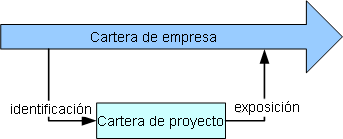
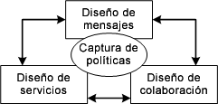
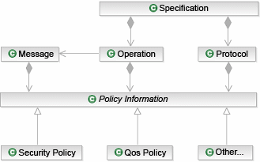

|
Reutilizar la cartera de servicios de empresa
|
Una de las ventajas a menudo comentadas sobre el uso de una arquitectura orientada a servicios es la posibilidad de que
los servicios representen activos reutilizables en la empresa, en lugar del desarrollo de componentes sólo dentro del
ámbito de una única aplicación. Esta vista de empresa es importante porque incorpora la noción de que una auténtica
arquitectura orientada a servicios para TI ofrece toda la infraestructura y las funciones empresariales como servicios
y de que las aplicaciones desarrolladas por la empresa reutilizan funciones de la cartera de servicios.
Por tanto, al iniciar un proyecto resulta importante saber si está desarrollando servicios como parte de la cartera o
si está desarrollando funciones de aplicación que utilicen estos servicios. Por ejemplo, el desarrollo de un sitio de
portal para que los clientes accedan a su información de cuentas es un proyecto de desarrollo de aplicaciones que
utiliza servicios de la cartera para información del cliente, información de cuentas, ofertas, etc. En cada caso, el
uso de la cartera tiene distintas implicaciones, el diseñador de servicio describe su especificación de servicio y la
publica como parte de la cartera. Esta especificación permite a los desarrolladores de aplicaciones entender los
requisitos de interacción para el servicio. El implementador de servicio puede ahora utilizar la misma especificación
de servicio para desarrollar una o más implementaciones del servicio, garantizando que la implementación cumple con la
especificación. El siguiente diagrama muestra la relación entre la cartera de servicios de toda la empresa y la
cartera del proyecto.

Para obtener más información, consulte el concepto Cartera
de servicios.
|
Utilizar mecanismos y patrones de diseño
Utilice los mecanismos y patrones de diseño que se adapten al servicio diseñado y de acuerdo con las directrices de
diseño del proyecto. La incorporación de un patrón o mecanismo significa realmente realizar muchos de los pasos
posteriores de esta tarea, pero de acuerdo con las reglas definidas por el patrón o el mecanismo.
Tenga en cuenta que los patrones y los mecanismos se incorporan normalmente a medida que evoluciona el diseño, no sólo
como el primer paso en esta tarea. También se aplican frecuentemente entre un conjunto de elementos de modelo, en lugar
de sólo a un único elemento.
La transformación de un servicio en su realización a menudo entraña un conjunto de patrones, algunos de los cuales se
describen en la Directriz: Patrones de componentes de servicio.
|
Describir la organización lógica de la solución
|
A menudo resulta útil organizar sus ideas desde el punto de vista de las distintas vistas de un sistema y de cómo los
servicios que desarrolla encajan en dichas vistas. Al definir las vistas de organización lógicas, es importante que la
asignación de un servicio a una vista no implique la propiedad desde un punto de vista de la contención o el Lenguaje
de modelado unificado (UML); es decir, que el mismo servicio podrá participar en varias vistas lógicas. Merece la pena
que las vistas organizativas se diseñen en el modelo antes del desarrollo de servicio o al menos de la primera
iteración de estas vistas, para que los servicios se puedan asignar a las vistas según se vayan identificando. En el
modelo de servicio, utilizamos un elemento de modelo Partición de servicio para representar un aspecto de una vista.
Estas particiones se pueden utilizar para representar todas las distintas perspectivas de la solución, pero no implican
la propiedad de los servicios a ellas asignados. Para obtener más información, consulte el concepto Particionamiento de soluciones.
También es posible que estas particiones, al menos aquellas que representan puntos de vista clave, residan en modelos
separados de los propios servicios, lo que permite que los modelos de partición evolucionen por separado.
|
Describir elementos de servicio
|
Como siempre es el caso cuando se observa el modelado de sistemas de software, existe un gran número de puntos de
entrada a dichos modelos, gran variedad de representaciones que podemos utilizar y, por supuesto, muchas metodologías
que se pueden aplicar. En la mayoría de los casos, estos puntos de entrada se deben a problemas específicos, en
dominios tanto tecnológicos como empresariales, que deben solucionarse. Estos problemas son lo suficientemente
importantes como para actuar de puntos de partida, porque entenderlos y la interacción entre ellos resulta fundamental
para obtener éxito.
Observamos que había pocos problemas en el desarrollo de soluciones orientadas a servicios, el siguiente diagrama
representa estos problemas principales como tareas de diseño específicas. Aunque observemos que cada uno de estos
problemas puede actuar como punto de partida para el diseño de servicios, y que cada enfoque tiende a optimizarse bien
para una determinada clase de servicios, es muy probable que los proyectos grandes utilicen una combinación de enfoques
en la identificación y el diseño de servicios.

Para obtener más información, consulte la Actividad: Análisis de activos existentes, que presenta un conjunto de técnicas
detalladas que dan soporte a estos enfoques.
En este enfoque, el enfoque es mucho mayor en el dominio de servicio. Técnicas como la ingeniería de dominios o el
análisis y el diseño orientados a objetos proporcionan un conocimiento más profundo del desarrollo de modelos de
dominio abstractos. Este foco normalmente produce modelos altamente reutilizables para el esquema de mensajes. El
diseño de servicio es normalmente una actividad secundaria aunque a veces se realiza en paralelo. En el Intercambio de
datos electrónicos (EDI), por ejemplo, no existe noción real de una interfaz de servicio porque los sistemas EDI
normalmente tienen una única bandeja de entrada y salida global para mensajes.
Un ejemplo de tal enfoque podría estar en el campo tradicional de empresa a empresa, tipificado por la estandarización
EDI. En este caso, el foco de la actividad de diseño es el desarrollo del esquema de mensaje acordado en algún sector u
otro ámbito y se considera representativo del esquema de una clase de mensajes, por ejemplo, estándares de la industria
como ACORD, SWIFT y RosettaNet (consulte Tarea:
Diseño de mensaje).
En este enfoque, el diseñador está preocupado de exponer, como servicio o conjunto de servicios, las funciones
esperadas de la empresa o la aplicación. En este caso, no conocemos necesariamente lo que el cliente de los servicios
decidirá hacer con nuestro servicio, pero sabemos los tipos de interacciones que dichos clientes esperan. Por tanto,
los mensajes tienden a ser secundarios y a desarrollarse en respuesta a los requisitos de una operación.
Un ejemplo de este enfoque serían los servicios web presentados por empresas como Amazon y eBay. Tales
interfaces de servicio no imponen un proceso empresarial al cliente. En la mayoría de los casos ni siquiera imponen
interfaces necesarias al cliente, pero exponen las operaciones de sus respectivos proveedores de servicio de forma
clara e intuitiva a otros desarrolladores.
Tal como mencionábamos antes, un modelado centrado en servicios a menudo se presta bien a un enfoque dirigido por
guiones de uso mediante la comprensión de la necesidad de los actores, los clientes externos del servicio y el
suministro de operaciones que dan soporte a estas necesidades, operaciones como el examen de catálogos, la adición de
elementos al carro de la compra, la extracción, etc.
En un diseño de colaboración, el foco está en la colaboración de dos o más servicios; se trata sobre todo de una vista
de proceso de los servicios y está relacionada con un modelado empresarial más tradicional que con una actividad de
desarrollo de software. En este enfoque, los servicios se ven como roles que cumplen en la colaboración y la
especificación de servicio es por tanto el conjunto de responsabilidades definido para el rol a través de una o más
colaboraciones.
Dicho enfoque debería ser reconocible para aquellos que se han involucrado en el desarrollo de los procesos de
intercambio de socios (PIP) de RosettaNet o en el desarrollo de los estándares OAGIS, aunque las colaboraciones sean
menos que completas en tales casos. Tal enfoque sería común dentro de una empresa desde el punto de vista del diseño de
proceso empresarial o en actividades de integración empresarial en los que los componentes de un sistema de TI se
expongan como servicios.
En este caso, se da normalmente el caso de que la especificación de servicio se pueda derivar directamente de la
colaboración, pero este enfoque tiende a centrarse menos en el contenido de mensaje que lleva a un requisito de enfoque
híbrido para su finalización.
Política es un término amplio que utilizamos aquí para cubrir sentencias o restricciones que pueden considerarse
requisitos no funcionales. En el nivel de este modelo, debemos darnos cuenta de que no queremos que el modelo se
rellene con sentencias detalladas sobre información técnica sino que de forma más realista, capturamos el intento del
sistema respecto a estos requisitos. Por ejemplo, podemos saber que determinado mensaje debe transmitirse y mantenerse
en privado a medida que se incluyen los detalles personales sobre nuestros clientes; queremos capturar el intento de
que el mensaje sea privado, no que necesitemos cifrado de datos mediante cifrado de AES de 128 bits a través de un
conjunto de datos XML canónicos con cifrado clave, principalmente porque muy poca gente sabrá lo que esto significa,
podremos especificarlo en un modelo en este nivel de abstracción (consulte Tarea:
Identificar patrones de seguridad).
El siguiente diagrama muestra la asociación de políticas con los elementos del modelo de servicio. Tenga en cuenta que la información sobre
políticas se puede adjuntar a información distinta de los componentes de especificación identificados a continuación,
aunque ésta es el área principal de interés.

Para obtener información sobre modelado de políticas de seguridad, consulte la documentación técnica Modelado de problemas de seguridad en arquitectura orientada a servicios.
|
Dependencias de servicio del modelo
Otro aspecto clave del Artefacto: Modelo de servicio que debe desarrollarse durante la
especificación es la captura de las dependencias entre servicios. Como parte del modelo de servicio, se capturan de forma natural una serie de
dependencias. Éstas pueden ser tan obvias como la relación entre un servicio y su especificación, o más complejas, como
la relación lógica entre dos servicios independientes ya que ambos implementan la misma especificación. Estas
dependencias (descritas en Artefacto: Modelo de servicio e Informe: Dependencias de servicio) son importantes para entender la posibilidad de
desplegar un servicio como unidad autónoma y afectará a su evolución en el tiempo a medida que las dependencias se
vuelvan restricciones en posibilidad del servicio de cambiar.
Las dependencias de servicio describen las relaciones entre servicios que surgen en el contexto más amplio de cómo se
utilizarán. Cuando un servicio se forma a partir de una composición de otros servicios, el servicio componente depende
de los servicios compuestos. Cuando se utilizan servicios en el contexto de un proceso empresarial, existe una
dependencia relacionada con el proceso que surge de la secuencia inherente de pasos en el proceso empresarial que dicta
el orden en que se utilizarán los servicios.
-
Dependencia compuesta/dependencias funcionales que surgen de la composición de varios servicios.
-
-
Ejemplo: Reservar vehículo dependerá de Comprobar tarifas y Realizar reserva para su funcionalidad
-
Dependencia temporal en la que hay una condición previa o posterior o o un requisito de proceso que deberá
tenerse en cuenta en composiciones o coreografías.
-
-
Dependencia de condición previa: por ejemplo, otra invocación de servicio debe haberse ejecutado
correctamente antes de que la invocación actual pueda iniciar su ejecución.
-
Dependencia de procesos: por ejemplo, se necesita otra invocación de servicio para llevar a cabo la
ejecución correcta del servicio actual.
-
Dependencia de condición posterior: aparece en casos en los que un servicio necesita otra invocación
de servicio tras su ejecución.
Estas dependencias a menudo pueden formar parte del proceso de decisiones que un cliente de servicio debe atravesar en
la elección de reutilización de un servicio, particularmente si hay varias implementaciones entre las que elegir.
Los tipos de dependencias/asociaciones en el modelo de servicio que son importantes se enumeran a continuación.
-
La relación entre un servicio y los proveedores de servicio que implementa.
-
La relación entre un servicio y la especificación de servicio que implementa.
-
La relación entre un servicio y las especificaciones de servicio que necesita.
-
La relación entre un servicio y cualquier canal de servicio que lo conecte con otros servicios y, por lo tanto, el
servicio en el otro extremo del canal.
-
La relación entre un servicio y cualquier partición de servicio en la que aparezca el servicio.
Es por tanto importante que todas las especificaciones de servicio sean completas, no sólo con respecto a las
operaciones y los mensajes que proporciona sino también con dependencias como las interfaces necesarias para
operaciones de devolución de llamada. El informe Dependencias de servicio proporciona una visión general de las dependencias
importantes para el modelo de servicio.
|
Composición y flujos de servicios del modelo
Los servicios a menudo se componen de otros servicios existentes y en algunos casos tecnología como la coreografía
pueden permitir que el servicio se desarrolle sin código explícito puramente como composición de servicios existentes.
Durante la especificación, los servicios que reutilizan elementos que ya están en la cartera de empresa, y han
documentado sus dependencias en estos servicios, pueden considerarse servicios compuestos si su funcionalidad depende
del funcionamiento de un servicio compuesto y si el compuesto no puede desplegarse sin acceso a los servicios
compuestos.
En algunas infraestructuras de arquitectura orientada a servicios, se piensa en una capa de proceso
empresarial para gestionar sólo los servicios compuestos coreografiados en los que se proporcionan procesos
complejos como coreografías gestionadas de servicios más detallados. En este caso, se puede utilizar el Lenguaje de
ejecución de procesos empresariales para servicios web (BPEL4WS) como herramienta para el desarrollo de servicios
compuestos, flujos de servicios y capas de proceso empresarial.
Por tanto, se pueden identificar dos tipos de servicios compuestos:
-
Servicios compuestos conectados estrechamente: se caracterizan por una baja flexibilidad, debido a
un flujo y a un control de servicios predefinidos en los que no se externalicen el flujo y el control. Estos tipos
de servicios tienen atributos de calidades de servicio atractivos como el rendimiento.
-
Servicios compuestos conectados no estrechamente: se trata de servicios caracterizados por una
alta flexibilidad en los que la composición de servicios en procesos empresariales se lleva a cabo externalizando
el flujo y el control. La descripción de flujo de la composición se externaliza. Este tipo de composición explota
el modelado de herramientas, la variabilidad dinámica a través de reglas, y la variabilidad estática a través de
modelado. La composición que utiliza BPEL es un ejemplo.
Para obtener más información, consulte Concepto: Composición y coreografía de servicios así como Directriz: Realización de servicio - Servicios BPEL en una aplicación de arquitectura
orientada a servicios para obtener un ejemplo específico de proyecto.
|
Documentar requisitos no funcionales
El uso de la arquitectura orientada a servicios ofrece la oportunidad de elegir un Artefacto: Proveedor de servicios basado no sólo en la funcionalidad
que proporciona sino en las Calidades de servicio (QoS) que puede garantizar. Uno de los motivos para cambiar un
proveedor de servicio puede a menudo ser resultado de un cambio en los requisitos no funcionales, necesitándose un
nuevo nivel de QoS no actualmente soportado por un proveedor existente. También puede derivar de la degradación de la
QoS esperada por el cliente de servicio. Una arquitectura orientada a servicios permite esta agilidad a menor coste, en
general, que otros estilos arquitectónicos.
La calidad de servicio se puede observar desde dos perspectivas: la del proveedor y la del cliente. El proveedor
de servicios garantiza proporcionar y mantener una calidad de servicio para cada uno de sus servicios o grupo de
servicios. El cliente de servicio, por otro lado, "compara" las calidades de servicio deseadas y elige un proveedor
según éstas. También es importante observar que en valores comerciales en los que el cliente y el proveedor entran en
un contrato legal sobre el uso del servicio, estas garantías de calidad de servicio se ejemplifican en acuerdos de
nivel de servicio, frecuentemente con penas asociadas con el no cumplimiento de un proveedor de dichos acuerdos.
Por tanto, es muy importante especificar claramente los requisitos no funcionales necesarios para el cliente (por
ejemplo, coste de transacción, rendimiento, disponibilidad, seguridad, etc.) de un servicio o un conjunto de servicios.
En esta tarea de Especificación de servicio, identificamos requisitos no funcionales para la QoS deseada. Los
requisitos no funcionales se utilizarán para asignar recursos para componentes de servicio que ofrecen los servicios y
para financiar la realización y el mantenimiento de componentes de servicio que garanticen la entrega de la QoS a lo
largo del tiempo. Deberán tomarse decisiones clave sobre arquitectura para garantizar que se conseguirá la calidad de
servicio prometida basada en requisitos no funcionales.
La forma en que los requisitos no funcionales se relacionan con el Artefacto: Especificación de servicio no se define en esta
directriz. No hay límites establecidos en lo que constituye dicho requisito, obviamente QoS, la seguridad se ha
mencionado anteriormente, entre los ejemplos están:
-
Disponibilidad (por ejemplo, tiempo medio entre anomalías)
-
Ventana operativa (¿hay algún tiempo en el que no espere utilizar este servicio?)
-
Tiempo de respuesta (¿con qué rapidez responde el servicio a una solicitud?)
-
Rendimiento en hora punta (¿cuántas solicitudes de servicio pueden producirse por unidad de tiempo, por
ejemplo , por segundo, por minuto, por hora?)
|
Documentar requisitos de gestión de estado
Aunque los servicios individuales se consideran sin estado, las composiciones a menudo tienen requisitos para mantener
la información de estado a través de la invocación de los servicios compuestos. El coreógrafo de estos servicios es a
menudo responsable de la gestión del estado. De forma alternativa, un componente que implemente y ejecute varios
servicios u operaciones relacionados en los servicio puede necesitar mantener el estado entre invocaciones por motivos
de rendimiento.
La gestión de estado en un entorno de arquitectura orientada a servicios puede dividirse en tres categorías
principales:
-
Estado de transacción: en el que un servicio tiene una transacción abierta durante una
conversación con un cliente.
-
Estado de seguridad: en el que se mantiene abierto un contexto de seguridad durante una
conversación con un cliente.
-
Estado funcional: en el que la conversación con un cliente implica un número de operaciones
relacionadas.
Para obtener más información, consulte la Directriz: Gestión de estado para servicios.
|
|